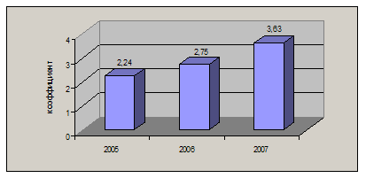

Туристская деятельность в сельском населенном пункте // Труды международной туристской академии. 2010 (в печати).
Г.П. Долженко, А.Г. Голубев, Е.Г. Долженко
Южный федеральный университет, 344090, г.Ростов-на-Дону, ул.Зорге, 40. dek_geo@sfedu.ru
Southern Federal University, 344090, Rostov-on-Don,Zorge St., 40. dek_geo@sfedu.ru
Туристское агентство "Ирина-Тур". Станица Павловская Краснодарского края. golubev_and@mail.ru
Travel agency "Irina-Tur". Stanitsa Pavlovskaya, Krasnodar Territory. golubev_and@mail.ru
Первая публикация в Южном федеральном округе о деятельности туристской фирмы в сельском населенном пункте. Проанализированы условия развития въездного и выездного туризма в Павловском районе Краснодарского края, результаты опроса клиентов туристского агентства <Ирина-тур>, открытом в станице Павловской в 2003 г., высказываются предложения по дальнейшей организации работы агентства.
Ключевые слова: туризм внутренний, выездной и въездной, туристская дестинация, мотивация туристских путешествий, туристское агентство, туроператорская деятельность, экскурсия, сельский (<зеленый>) туризм, этнографический туризм
Presented study is the first study in the Southern Federal District which
considers the functioning of the travel agency in the countryside settlement. The conditions of development of inbound and outbound tourism in the Pavlovsky region of Krasnodar Territory are studied. Also the results of the survey conducted among the clients of travel agency "Irina-tur" (established in Stanitsa Pavlovskaya in year 2003) are studied. Suggestions on the future development of the agency are given.
Keywords: inbound tourism, domestic and outbound tourism, tourist destination, travel motivation, tourism agency, tour operator, excursion, rural tourism, ethnographical tourism
Туристская деятельность в сельском населенном пункте, под чем в настоящее время подразумевается, в основном, организация сельского (<зеленого>) туризма для урбанизированного населения страны, ни в коей мере не ограничивается им. Она включает в себя значительно большее число других составляющих, таких как проведение туров по стране и за рубежом, экскурсий и иных туристских мероприятий для жителей сельских поселений.
До недавнего времени туристские предложения на селе исходили только от туристских фирм городов, но в последние годы в отдельных сельских населенных пунктах (станицах, селах) Южного федерального округа стали создаваться туристские агентства, которые успешно справляются со своими функциями по обслуживанию сельских жителей. Одной из таких организаций стало стабильно работающее с 2003 г. в станице Павловской Краснодарского края туристское агентство <Ирина-тур>.
Его деятельность явилась предметом исследования кафедры общей географии, краеведения и туризма Южного федерального университета, реализующей научную программу по изучению условий развития туризма и особенностей его организации в Южном федеральном округе.
Проведенное исследование включало следующие основные задачи:
оценку туристско-географического положение станицы и района;
выявление социально-экономических факторов, способствующих развитию туристской деятельности в станице;
определение мотиваций к участию в туристских мероприятий жителей станицы и района;
оценку реализуемых туристских программ агентства <Ирина-тур>.
Условия развития туризма в станице Павловской и Павловском районе
Туристско-географическое положение Павловского района следует признать крайне выгодным. Он расположен на севере Краснодарского края, имеет площадь - 1788,8 км². Территория района характеризуется выравненностью, отсутствием больших рек и значительных по размерам озер, повсеместно распахана. В ее пределах отсутствуют природные и историко-культурные туристские ресурсы федерального значения. Все памятники архитектуры, монументы над братскими могилами советских воинов имеют местное значение и не способствуют развитию экскурсионных маршрутов в Павловский район из других местностей.
Но эти с туристской точки зрения недостатки исследуемой территории компенсируются благоприятным туристско-географическим положением станицы в случае оценки ее для организации отдыха местных жителей вне пределов района.
Павловская расположена в двухчасовой транспортной доступности (автобусной и железнодорожным транспортом) от Ростова-на-Дону, Краснодара и Ейского курорта на Азовском море, в четырехчасовой доступности от Анапы и Туапсе, курортных местностей на Черном море, и также в четырехчасовой доступности от горных кавказских территорий Адыгеи, т.е. вблизи крупных административных и культурных центров Юга России и популярных в стране мест отдыха и лечения.
Население станицы Павловской составляет 30 тыс. чел., Павловского района - 67 тыс. чел., из которых более 46 % относится к категории трудоспособного. Численность женщин превышает численность мужчин, достигая 54 %. Демографическая ситуация в районе практически идентична демографическим показателям в целом по стране. Наиболее активный туристский контингент - учащиеся среднего и старшего школьного возраста имеет в разные годы в районе численность от 800 до 1100 чел. [ 1 ].
Благосостояние граждан. Степень туристской активности граждан зависит от уровня их благосостояния. О нем, в первом приближении, можно судить по среднемесячной заработной плате наемных работников. В Павловском районе она равнялась в 2005 г. - 4625 руб., в 2006 г. - 5695 руб., в 2007 г. - 7508 руб. Отмечался ежегодный рост заработной платы, который находился в пределах 113 - 121 % [ 2 ].
О повышении уровня жизни населения района в последние годы дает также представление график <Соотношение денежных доходов и прожиточного минимума жителей> из Индикативного плана социально-экономического развития Павловского района, утвержденного Советом муниципального образования в январе 2008 г. (рис. 1). За два года коэффициент, отражающий рост заработной платы по сравнению с прожиточным минимумом, вырос в 1,6 раза.

Рис. 1. Соотношение денежных доходов и прожиточного минимума
жителей Павловского района
Об уровне благосостояния жителей Павловского района свидетельствует и число личных легковых автомобилей. Их, по данным ГИБДД Павловского района, в 2008 г. насчитывалось более 19,2 тыс., в том числе в станице Павловской - более 9 тыс. Автомобили активно используются в самодеятельных туристских путешествиях к морю и в горы.
Результаты исследований мотиваций туристских путешествий
жителей Павловского района
Изучение причин (мотивов) туристских путешествий клиентов туристских фирм и верный их учет при разработки туров представляют собой рациональный путь к успешным продажам туров, в чем в конечном счете и состоит деятельность самоокупаемых коммерческих туристских предприятий. Выявление мотивов путешествий осуществляется посредством опросов потенциальных туристов, методика которых заимствована у социологической науки. Но до настоящего времени отсутствуют публикации, где бы рассматривались мотивы путешествий жителей села.
Кафедрой общей географии, краеведения и туризма ЮФО уже ряд лет проводится с помощью прямого анкетирования клиентов туристских фирм изучение мотивов, которые привлекают жителей Ростова-на-Дону принять участие в тех или иных туристских путешествиях [ 3,4,5 ].
Аналогичная работа с использованием анкеты, по которой проводились исследования в Ростове-на-Дону, была осуществлена в 2008 г. в станице Павловской. На вопросы анкеты ответило 60 клиентов туристского агентства <Ирина-тур>, работающего в ней. Результаты изучения мотивов путешествий представлены в табл. 1.
Таблица 1
Мотивация путешествий клиентов туристских фирм Ростова-на-Дону и турагентства <Ирина-тур>
| Мотивация | Ростов-на-Дону | <Ирина-тур> | ||
| Муж. % | Жен. % | Муж. % | Жен. % | |
| Просто отдыхать, ни о чем не думая, расслабляться | 73 | 58 | 60 | 51 |
| Знакомство с новой культурой и образом жизни, едой и обычаями | 36 | 42 | 41 | 60 |
| Увидеть достопримечательности, явления природы, красивые виды и пейзажи, национальные парки | 33 | 52 | 20 | 42 |
| Знакомство с историческими и культурными памятниками | 28 | 40 | 30 | 34 |
| Оздоровительные, лечебные цели | 20 | 20 | 42 | 53 |
| Знакомство с развлечениями, ночной жизнью, возможность посетить хорошие рестораны, клубы и т.п. | 20 | 15 | 14 | 8 |
| Посещение исторических музеев | 18 | 17 | 14 | 15 |
| Посещение музеев изобразительных искусств | 14 | 20 | 14 | 15 |
| Посещение карнавалов, фестивалей, национальных праздников | 13 | 17 | 19 | 23 |
| Встречи с новыми интересными людьми | 12 | 24 | 6 | 14 |
| Возможность вести другой образ жизни - получить на период отдыха высокий уровень обслуживания | 12 | 22 | 45 | 47 |
| Шопинг | 12 | 24 | 4 | 21 |
| Посещение известных театров, концертов | 8 | 13 | 36 | 25 |
| Занятия спортом | 11 | 7 | 7 | 3 |
Анализ данных таблицы дает основания утверждать, что мотивации туристских поездок ростовчан и жителей Павловского района, т.е. горожан и селян в незначительной степени отличаются друг от друга. Те и другие, находясь в отпуске, хотят <просто отдыхать, ни о чем не думая>. Наибольший интерес к знакомству с новой культурой, различными достопримечательностями проявляют женщины. Как у мужчин, так и у женщин села высок интерес к турам оздоровительного характера, что вполне объяснимо дефицитом в станице высококачественного лечения, особенно, узкоспециализированного.
Тенденция к росту числа оздоровительных туров заметна во всем мире, эксперты предполагают что к середине 10-гг. XXI в. они будут одними из востребованных в мире. Материалы исследований в Павловской не противоречат этой уже сложившейся точки зрения специалистов туризма.
У сельских жителей отмечается повышенный интерес к получению на период отдыха высокого уровня обслуживания, т.е. стремление к гедонистическому поведению, что может являться ответом на достаточно не легкую жизнь на селе, где слабо развита сфера обслуживания, и при организации быта нужно рассчитывать преимущественно на собственные силы.
Выявился низкий интерес у жителей села к спортивным занятиям во время отпуска, который невысок и у горожан. Это еще раз показывает насколько слабо проникла физическая культура в жизнь российского общества, особенно на селе.
Исследования в Ростове-на-Дону и в Павловской достаточно убедительно показали, что туры для городских и для сельских жителей не должны отличаться друг от друга, и не может идти речи о каком-то особом специфическом туризме для селян, тем более для такого населенного пункта как Павловская, имеющего разнообразные контакты с крупными городами Ростовом-на-Дону и Краснодаром.
Мотивация путешествий непосредственно влияет на выбор места как для долговременного, так и кратковременного отдыха туристов (табл. 2).
Таблица 2
Рейтинг мест долговременного отдыха, предпочитаемых
жителями Ростова-на-Дону и ст-цы Павловской
| Места долговременного отдыха | Ростов-на-Дону, % | Павловская, % |
| На море | 83 | 86 |
| В горах зимой | 23 | 24 |
| В горах летом | 20 | 31 |
| На реке, озере | 19 | 3 |
| В лесном регионе летом | 16 | 4 |
| В лесном регионе зимой | 6 | 2 |
| В городах | 16 | 1 |
Как и горожане, селяне в своем большинстве предпочитают для отдыха побережья теплых морей, где создана туристская инфраструктура и можно проводить время, <не>, а лишь наслаждаясь физической составляющей отдыха. Главной туристской дестинацией для жителей Павловского района как для долговременного, так и кратковременного отдыха является Черноморское побережье Краснодарского края. Интерес представляет для 1/4 граждан горные районы Кавказа, имеющие туристскую инфраструктуру. Отдых у реки, озера и в лесном регионе непопулярен у селян, что их отличает от горожан. Без сомнения, сказывается постоянный контакт с природой сельских жителей, чего лишены граждане, живущие в городах.
Деятельность туристского агентства <Ирина-тур>
Для осуществления туристской деятельности в Павловском районе, удовлетворения в разнообразном отдыхе его жителей в 2003 г. было создано туристское агентство <Ирина-тур>, которое объединило существовавшие ранее в Павловской мелкие туристские организации <Лайт-тур>, <Путешествие> и <Класс-тур>.
Работу свою оно начало с заключения агентских договоров с туроператорами Ростова-на-Дону и Краснодара и продвижения различных туров жителям всех поселений района. За год агентство <Ирина-тур> создало весомый пакет предложений и зарекомендовала себя перед туроператорами как стабильно функционирующая агентская организация.
В 2005 г., окрепнув, агентство провело первую подготовленную своими силами обзорную экскурсию по Краснодару, для чего были заключены договор на аренду автобуса с транспортной компанией станицы Павловской, подготовлен свой групповод и заключен договор с краснодарским экскурсоводом. После этого <Ирина-тур> начало самостоятельно осуществлять экскурсионную деятельность.
В 2006 г. агентство при помощи Павловского районного центра образования организовало школьные образовательные экскурсии, в которых приняло участие большое число школьников средних и старших классов района. Представители общеобразовательных школ вошли в качестве агентов <Ирины-тур> в ее состав на общественных началах с правом рекламировать его деятельность, организовывать туристские группы и получать за это агентское финансовое вознаграждение. После активного участия школ в работе агентства количество проданных экскурсионных туров выросло на 14%.
В 2007 г. в результате маркетинговых исследований станиц, сел и хуторов Павловского района, а также населенных пунктов, расположенных в соседних районах в пределах радиуса действий телерадиокомпании <Тихорецк>, в базе данных возросло число населенных пунктов с потенциальными клиентами агентства (таблица 3). Результатом маркетинговой компании стал рост в 2007 г. продаж на 6% в сравнении с предыдущим годом.
Таблица 3
Населенные пункты, входящие в сферу деятельности
турагентства <Ирина-тур>
| № | Населенный пункт | Число жителей | Расстояние от офиса агентства, км |
| 1 | ст-ца Павловская | 30 542 | 0 |
| 2 | хут. Шевченко | 437 | 5 |
| 3 | село Краснопартизанское | 1073 | 6 |
| 4 | хут. Междуреченский | 625 | 7 |
| 5 | ст-ца Украинская | 742 | 8 |
| 6 | ст-ца Атаманская | 3930 | 10 |
| 7 | хут. Веселая жизнь | 381 | 12 |
| 8 | пос. Октябрьский | 1557 | 13 |
| 9 | ст-ца Старолеушковская | 5703 | 14 |
| 10 | хут. Средний Челбас | 1165 | 14 |
| 11 | ст-ца Новопластуновская | 2338 | 17 |
| 12 | ст-ца Новолеушковская | 6660 | 21 |
| 13 | хут. Ленинодар | 631 | 24 |
| 14 | хут. Упорный | 1076 | 28 |
| 15 | ст-ца Веселая | 2136 | 30 |
| 16 | ст-ца Новопетровская | 1474 | 31 |
| 17 | ст-ца Незамаевская | 2954 | 36 |
| 18 | хут. Красный | 747 | 37 |
| 19 | пос. Северный | 1429 | 43 |
В 2008 г. туристское агентство <Ирина-тур> обслужило 870 чел. (без учета школьников). Агентство организовало туристские поездки 10 групп общей численностью 210 чел. в центры горного туризма Краснодарского края, Адыгеи и Ставропольского края. На Черноморское побережье было отправлено 230 чел. С городами России познакомилось 170 чел. В Крым выехало 24 чел. С целью приобретения путевок на туры за границу обратилось 152 чел., на курорты России - 94 чел. Кроме того, 37 групп школьников общей численностью около 800 чел. совершили экскурсионные поездки по территории Краснодарского края.
В 2009 г. руководство агентства предполагает расширить свою деятельность и открыть офисы <Ирины-тур> в станицах Старолеушковской и Новолеушковской, самых крупных населенных пунктах с большим числом его клиентов.
Начата разработка этнографической экскурсии, нового типа экскурсий для Краснодарского края. Планируется посетить пос. Новокумский Левокумского района Ставропольского края, где компактно расселились казаки-некрасовцы, вернувшиеся из Турции почти полвека назад. Экскурсанты познакомятся там с историей казачества и с сохраненными некрасовцами элементами казачьего быта и культуры XVII - XVIII вв.
Изучение деятельности туристского агентства <Ирина-тур> привело к следующим выводам:
в сельском населенном пункте может успешно функционировать туристское агентство. Но он, будь то станица или село, и находящиеся вблизи него другие поселения должны иметь общую численность не менее 30 тыс. чел. Это та минимальная критическая масса жителей, которая позволит агентству работать круглый год.
Циклы сельскохозяйственных работ не представляют собой определяющего фактора в деятельности туристского агентства. Только период пика уборочной страды не позволяет механизаторам претендовать на отпуск. Устоявшееся мнение, что жители села не имеют возможностей отдыхать в связи с отсутствием свободного времени, опровергается деятельностью агентства <Ирина-Тур>, осуществляющей круглогодичную работу.
Мотивации туристских путешествий селян незначительно отличаются от мотиваций жителей городов. При формировании пакета предложений необходимо учитывать, что селяне, как и горожане во время отдыха предпочитают <просто>, преобладающее большинство склонно к проведению отдыха на море, знакомство с достопримечательностями, культурными ценностями имеет подчиненное значение.
Таким образом, при разработке стратегии отдыха для жителей села следует учитывать, в первую очередь, качество средств размещения, возможность получения лечебно-оздоровительных процедур, содержание развлекательных предложений.
Сельская туристская фирма может быть не только агентом туроператоров города, но и самостоятельно организовывать экскурсионные маршруты, как это делает <Ирина-тур>.
Кроме того, она имеет возможность стать туроператором сельского (<зеленого>) туризма, популярного в настоящее время в европейских странах: определить семьи, желающие принять на отдых горожан, объяснить им их задачи (обязанности и права как принимающей стороны), провести сертификацию жилищ, предназначенных во временный наем туристам, прорекламировать туры в городе с помощью городских туристских фирм и СМИ и, наконец, принимать туристов и контролировать условия выполнения договора хозяевами.
В городах Краснодарского края и Ростовской области стихийно развит самодеятельный туризм с использованием личного автотранспорта. Он представляет собой основной вид туризма и в сельских районах, названных субъектов Федерации.
Литература
1. Павловский район. Информация о районе. URL: http://pavlovskaya.org/ (дата обращения: 23.05.2009).
2. Официальный сайт администрации муниципального образования Павловского района. URL: http://pavlovskaya.kuban.ru (дата обращения: 23.05.2009).
3. Белорусова С.А. Характер потребительского спроса на туристские услуги в Ростовской области // Рубикон. Сб. научных работ молодых ученых. Вып. 33. Ростов н/Д, 2005.
4. Шмыткова А.В. Изучение рекреационных потребностей как основы формирования туристского продукта (на примере Ростовской области) // Экономико-географический вестник Южного федерального университета. 2008. № 5.
5. Долженко Г.П. Анализ на основе социологического исследования перспектив развития туризма в регионе (на примере Ростовской области) // Известия вузов. Северо-Кавказский регион. Общественные науки. 2009. № 1.
Сведения об авторах
Долженко Геннадий Петрович - кандидат географических наук, доцент, заведующий кафедрой общей географии, краеведения и туризма. Южный федеральный университет. Т. (863) 224-68-55.
E-mail: gennadiy.dolzhenko@gmail.com
Dolzhenko Gennadiy Petrovich - Candidate of Geographic Science, assistant professor, head of departament of geography, study of local lore and tourism, Southern Federal University. Ph. (863) 224-68-55.
E-mail: gennadiy.dolzhenko@gmail.com
Голубев Андрей Геннадьевич - менеджер туристского агентства <Ирина-тур>. Станица Павловская Краснодарского края. Т. (86191) 3-67-42.
E-mail: golubev_and@mail.ru
Golubev Andrey Gennadievich -
E-mail: golubev_and@mail.ru